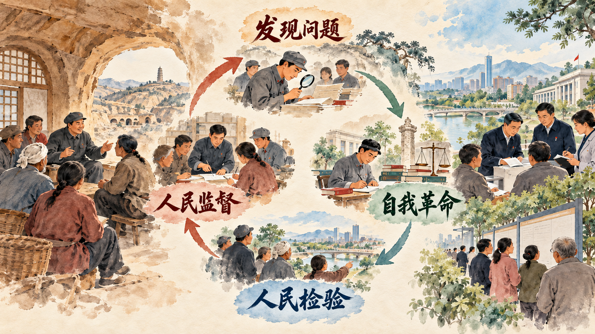

谁来监督执政党，执政党怎样监督自己
本节把视野从具体案件提升到长期执政。人民监督使权力运行始终接受人民评判，党的自我革命使党依靠自身力量发现问题、纠正偏差、完善制度、提高能力。两个答案共同服务于党长期执政和国家长治久安。
一、党的自我革命是跳出历史周期率的第二个答案
中国共产党在长期奋斗中形成了勇于自我革命的鲜明品格。自我革命体现为坚持真理、修正错误，正视问题、刀刃向内，通过自我净化、自我完善、自我革新、自我提高保持先进性和纯洁性。
自我净化清除侵蚀党的健康肌体的因素，自我完善补短板、强弱项和健全制度，自我革新破除不合时宜的观念与机制，自我提高增强执政本领。四个方面构成持续循环，使发现问题能够转化为组织改进。
参考资料｜“窑洞之问”与跳出历史周期率的两个答案
1945 年，黄炎培在延安同毛泽东谈到历史上政权兴衰的周期率。毛泽东回答，已经找到新路，这条新路就是民主，让人民来监督政府。人民监督使群众能够表达意见、检验政策和约束权力。
新时代，习近平总书记指出，经过百年奋斗特别是党的十八大以来新的实践，我们党又给出了第二个答案，这就是自我革命。党依靠自身力量正视问题、纠正错误、完善制度，同时接受人民监督，两个答案在长期执政实践中相互促进。

资料来源：财政部江西监管局《“窑洞之问”与跳出历史周期率的两个答案》，2021 年 12 月；本书编写组《习近平新时代中国特色社会主义思想概论》，2023 年。
二、时刻保持解决大党独有难题的清醒和坚定
长期执政的大党组织规模大、党员数量多、管理层级多、使命任务重。怎样始终不忘初心、牢记使命，怎样统一思想、统一意志、统一行动，怎样保持强大执政能力和领导水平，怎样保持干事创业精神状态，怎样及时发现和解决自身问题，怎样保持风清气正的政治生态，构成必须长期回答的大党独有难题。
解决这些难题需要常态化机制。理论学习统一思想，严密组织体系保证执行，监督体系及时发现问题，干部教育管理保持担当和廉洁，制度建设把有效做法稳定下来。清醒和坚定表现为持续解决问题的能力。
新闻摘录｜老百姓说好才是真的好：整改结果怎样回到群众面前
北京西城区一些街道把群众反映强烈的问题带到公开议事和评议现场。居民、职能部门、社区和监督人员面对面说明问题办理过程：哪些事项已经整改，哪些需要跨部门协同，责任单位准备怎样推进。群众随后根据亲身体验评价结果，新的问题也能继续进入办理清单。
湖南围绕养老服务领域开展整改时，把机构收费、补贴资金、服务质量和安全管理纳入检查。老年人和家属关心的是饭菜、照护、费用和安全，部门检查则核对合同、资金和资质。整改结果通过回访、公开和再次检查回到服务对象面前。
群众评议使整改从“单位已经办理”走向“使用者能够感受”。问题提出、部门办理、结果公开、群众评价和继续整改形成闭环，人民监督由一次意见表达延伸为对治理结果的持续检验。
讨论题
- 群众评价整改结果时，亲身感受和专业标准怎样结合？
- 跨部门问题长期没有解决时，公开评议能够推动哪些责任重新明确？
- 你所在校园有哪些事项适合采用“提出问题—办理公开—使用者评价”的闭环？
资料来源：中央纪委国家监委网站《推动整改整治成果让群众可感可及》，2026 年 10 月 1 日；《以群众评价检验集中整治成效》，2025 年 10 月 26 日。
三、以伟大自我革命引领伟大社会革命
党的自我革命与党领导的社会革命相互促进。党通过自我革命提高领导能力、保持先进性和纯洁性，为推进改革发展稳定提供政治保证；伟大社会革命提出的新任务、新矛盾和新要求，又推动党持续改进领导方式和治理能力。
以伟大自我革命引领伟大社会革命，需要把全面从严治党作为长期战略、永恒课题。政治建设保证方向，思想建设凝聚力量，组织建设保障执行，正风肃纪密切党群关系，反腐败维护公平正义，制度建设巩固治理成果。党的建设质量最终体现在推动事业发展、解决群众问题和经受风险考验的能力上。